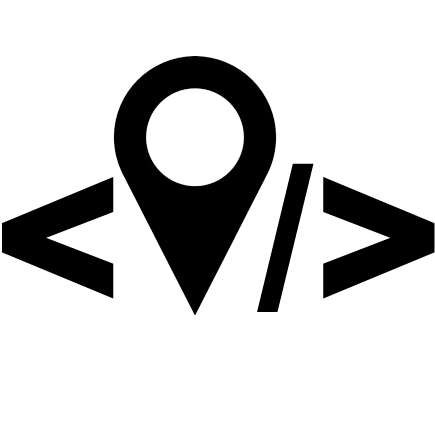

<!doctype html>
<html lang="en" class="h-100">
  <head>
    <!-- Required meta tags -->
    <meta charset="utf-8">
    <meta name="viewport" content="width=device-width, initial-scale=1, shrink-to-fit=no">
    <link rel="shortcut icon" href="favicon.png">

    <!-- Bootstrap CSS -->
    <link rel="stylesheet" href="https://stackpath.bootstrapcdn.com/bootstrap/4.2.1/css/bootstrap.min.css" integrity="sha384-GJzZqFGwb1QTTN6wy59ffF1BuGJpLSa9DkKMp0DgiMDm4iYMj70gZWKYbI706tWS" crossorigin="anonymous">

    <link rel="stylesheet" href="https://unpkg.com/leaflet@1.4.0/dist/leaflet.css"
  integrity="sha512-puBpdR0798OZvTTbP4A8Ix/l+A4dHDD0DGqYW6RQ+9jxkRFclaxxQb/SJAWZfWAkuyeQUytO7+7N4QKrDh+drA=="
  crossorigin=""/>

    <title>Vectorization protocol demo</title>
  </head>
  <body class="h-100">
    <div id="map" class="h-100"></div>


    <script src="https://unpkg.com/leaflet@1.4.0/dist/leaflet.js"
      integrity="sha512-QVftwZFqvtRNi0ZyCtsznlKSWOStnDORoefr1enyq5mVL4tmKB3S/EnC3rRJcxCPavG10IcrVGSmPh6Qw5lwrg=="
      crossorigin=""></script>
    <script src="https://cdnjs.cloudflare.com/ajax/libs/leaflet-plugins/3.0.3/layer/tile/Bing.min.js"></script>
    <script src="https://cdn.osmbuildings.org/classic/0.2.2b/OSMBuildings-Leaflet.js"></script>

    <script src="https://cdnjs.cloudflare.com/ajax/libs/leaflet-ajax/2.1.0/leaflet.ajax.min.js"></script>


    <script type="text/javascript">
      function getStyle(f){
        var p = f.properties;

        var s = {
          weight: 2,
          fillOpacity: .2
        };

        var opacity;

        if (p.reconstr){
          s.dashArray = '4 4';
          opacity = 0.4;
        } else {
          opacity = 0.8
        }
        switch(true){
          case (p.phase < -1):
            s.color = 'rgba(150, 150, 150, ' + opacity + ')';
            s.fillColor = 'rgba(150, 150, 150, .4)';
            break;
          case (p.phase == -1):
            s.color = 'rgba(61, 90, 128, ' + opacity + ')';
            s.fillColor = 'rgba(61, 90, 128, .4)';
            break;
            case (p.phase == 1):
            s.color = 'rgba(247, 110, 1, ' + opacity + ')';
            s.fillColor = 'rgba(247, 110, 1, .4)';
            break;
          case (p.phase == 2):
            s.color = 'rgba(194, 0, 251, ' + opacity + ')';
            s.fillColor = 'rgba(194, 0, 251, .4)';
            break;
          case (p.phase == 3):
            s.color = 'rgba(56, 134, 89, ' + opacity + ')';
            s.fillColor = 'rgba(56, 134, 89, .4)';
            break;
          case (p.phase > 3):
            s.color = 'rgba(80, 47, 76, ' + opacity + ')';
            s.fillColor = 'rgba(56, 134, 89, .4)';
            break;
          default:
            s.color = 'rgba(31, 120, 180, ' + opacity + ')';
            s.fillColor = 'rgba(31, 120, 180, .4)';
            break;
        }

        if (p.part && p.part.indexOf('u') > -1) {
          s.fill = false;
          s.color = 'rgba(0, 0, 0, .2)';
        } else if (p.part && p.part.indexOf('l') > -1) {
          s.fillColor = 'rgba(0, 0, 0, .1)';
          s.color = 'rgba(0, 0, 0, .2)';
        } else if (p.part && p.part.indexOf('d') > -1) {
          s.fillColor = 'rgba(171, 221, 164, .8)';
          s.color = 'rgba(171, 221, 164, 1)';
        }
        return s;
      }

      function loadGeoJSON(path, cb){
        fetch(path).then( function(response){
          response.json().then(function(j){
            cb(j);
          });
        });
      }

      function GeoJsonOnMap(gj){
        // Clean overlays & map
        Object.keys(overlays).forEach( function(k){
          map.removeLayer(overlays[k]);
          controlLayers.removeLayer(overlays[k]);
        });
        overlays = {};

        var phases = [];
        gj.features.forEach( function(f, i){
          // Set heights:
          if (!f.properties.height){
            if (f.properties.part === 'l' || f.properties.part === 'd'){
              gj.features[i].properties.height = .1;
            } else {
              gj.features[i].properties.height = 1;
            }
            gj.features[i].properties.minHeight = 0;
          }

          var ph = f.properties.phase ? f.properties.phase : '0';
          if (phases.indexOf('Phase ' + ph) < 0){
            phases.push('Phase ' + ph);
          }
        });
        phases.sort().forEach(function(p){
          overlays[p] = L.layerGroup();
        });

        var geojsonLayer = new L.GeoJSON(gj, {
          style: getStyle,
          onEachFeature: function(f, l){
            if (!f.properties.phase) {
              l.addTo(overlays['Phase 0']);
            } else {
              l.addTo(overlays['Phase ' + f.properties.phase]);
            }
            l.bindPopup('<table class="table table-bordered table-sm">' +
              '<tr>' +
                '<th>PAThs Place (place)</th>' +
                '<td><a href="https://atlas.paths-erc.eu/places/' + f.properties.place + '">paths.places.' + f.properties.place + '</a></td>' +
              '</tr>' +
              '<tr>' +
                '<th>Building / Area (subplace)</th>' +
                '<td>' + f.properties.subplace + '</td>' +
              '</tr>' +
              '<tr>' +
                '<th>Bibliographic reference (source)</th>' +
                '<td><a href="https://www.zotero.org/groups/2189557/erc-paths/items/itemKey/' + f.properties.source + '">PAThs Zotero ' + f.properties.source + '</a></td>' +
              '</tr>' +
              '<tr>' +
                '<th>Details of the bibliographic reference (subsource)</th>' +
                '<td>' + f.properties.subsource + '</td>' +
              '</tr>' +
              '<tr>' +
                '<th>Phase</th>' +
                '<td>' + f.properties.phase + '</td>' +
              '</tr>' +
              '<tr>' +
                '<th>Digitized by</th>' +
                '<td>' + f.properties.operator + '</td>' +
              '</tr>' +
            '</table>'
              )
          }
        });

        var osmb = new OSMBuildings().set(gj);
        overlays['3D'] = osmb;

        Object.keys(overlays).forEach( function(k){
          if (k !== '3D'){
            overlays[k].addTo(map);
          }
          controlLayers.addOverlay(overlays[k], k);
        });

        map.fitBounds(geojsonLayer.getBounds());
      }

      var map = L.map('map', {
        maxZoom: 25,
      });


      var basemaps = {
        // https://stackoverflow.com/a/32391908/586449
        'Bing': new L.BingLayer('Aq-XTwgJPPpTJNGBrW2yGvw2wGrI14YX5rDMbwcGYwvncAIFCTkZANh3n_Quup5q', {
          type: 'Aerial',
          maxZoom: 20
        }),
        'GoogleSat': L.tileLayer('http://{s}.google.com/vt/lyrs=s&x={x}&y={y}&z={z}',{
          maxZoom: 20,
          subdomains:['mt0','mt1','mt2','mt3']
        }),
        'OSM': L.tileLayer('https://{s}.tile.openstreetmap.fr/hot/{z}/{x}/{y}.png', {
          // 'https://{s}.tile.openstreetmap.org/{z}/{x}/{y}.png', {
          attribution: '&copy; <a href="https://www.openstreetmap.org/copyright">OpenStreetMap</a> contributors'
        }),
        'Pelagios': L.tileLayer('http://pelagios.org/tilesets/imperium/{z}/{x}/{y}.png', {
          maxZoom: 11
        })
      };
      basemaps['Bing'].addTo(map);
      // basemaps['GoogleSat'].addTo(map);

      var controlLayers = L.control.layers(basemaps).addTo(map);
      var overlays = {};


      var sites = L.control({position: 'bottomleft'});
      var avalaible_gj = [
        'paths.places.16-Elephantine/BGQ6JNX2-77',
        'paths.places.16-Elephantine/BGQ6JNX2-186',
        'paths.places.19-Luxor-complex/BGQ6JNX2-69',
        'paths.places.19-Luxor-complex/BGQ6JNX2-70',
        'paths.places.19-Luxor-complex/BGQ6JNX2-71',
        'paths.places.20-Koptos/BGQ6JNX2-64',
        'paths.places.21-Dendera/BGQ6JNX2-58',
        'paths.places.21-Dendera/BGQ6JNX2-63',
        'paths.places.24-Panopolis/BGQ6JNX2-161',
        'paths.places.24-Panopolis/BGQ6JNX2-160',
        'paths.places.28-Hermopolis-Magna/BGQ6JNX2-58',
        'paths.places.28-Hermopolis-Magna/BGQ6JNX2-59',
        'paths.places.36-Pelusium/BGQ6JNX2-88',
        'paths.places.36-Pelusium/BGQ6JNX2-89',
        'paths.places.36-Pelusium/BGQ6JNX2-90',
        'paths.places.36-Pelusium/BGQ6JNX2-189',
        'paths.places.38-Alexandria/BGQ6JNX2-1',
        'paths.places.70-Hermonthis/BGQ6JNX2-74',
        'paths.places.74-Naqlun/BGQ6JNX2-131a',
        'paths.places.74-Naqlun/BGQ6JNX2-131b',
        'paths.places.74-Naqlun/BGQ6JNX2-131c',
        'paths.places.78-Kellia/BGQ6JNX2-114',
        'paths.places.78-Kellia/BGQ6JNX2-115',
        'paths.places.78-Kellia/BGQ6JNX2-116',
        'paths.places.78-Kellia/BGQ6JNX2-117',
        'paths.places.88-Petemout/BGQ6JNX2-66',
        'paths.places.88-Petemout/BGQ6JNX2-67',
        'paths.places.96-Philae/BGQ6JNX2-78',
        'paths.places.96-Philae/BGQ6JNX2-79',
        'paths.places.96-Philae/BGQ6JNX2-80',
        'paths.places.104-Medinet-Madi/BGQ6JNX2-39',
        'paths.places.104-Medinet-Madi/BGQ6JNX2-40',
        'paths.places.104-Medinet-Madi/BGQ6JNX2-41',
        'paths.places.104-Medinet-Madi/BGQ6JNX2-42',
        'paths.places.104-Medinet-Madi/BGQ6JNX2-43',
        'paths.places.104-Medinet-Madi/BGQ6JNX2-44',
        'paths.places.113-Red-Monastery-at-Atripe/BGQ6JNX2-155',
        'paths.places.114-Kellis/BGQ6JNX2-85',
        'paths.places.115-Bagawat/BGQ6JNX2-86',
        'paths.places.115-Bagawat/BGQ6JNX2-87',
        'paths.places.116-Abu-Mina/BGQ6JNX2-21a1',
        'paths.places.116-Abu-Mina/BGQ6JNX2-21a2',
        'paths.places.116-Abu-Mina/BGQ6JNX2-21a3',
        'paths.places.116-Abu-Mina/BGQ6JNX2-21b',
        'paths.places.116-Abu-Mina/BGQ6JNX2-21b1',
        'paths.places.116-Abu-Mina/BGQ6JNX2-22',
        'paths.places.182-Karnak/BGQ6JNX2-166',
        'paths.places.182-Karnak/BGQ6JNX2-167',
        'paths.places.188-Pharan/BGQ6JNX2-96a',
        'paths.places.188-Pharan/BGQ6JNX2-96b',
        'paths.places.188-Pharan/BGQ6JNX2-97',
        'paths.places.122-Hawara/BGQ6JNX2-49',
        'paths.places.215-Deir-Abu-Hennes/BGQ6JNX2-141',
        'paths.places.338-Taposiris-Magna/taposiris',
        'paths.places.338-Taposiris-Magna/BGQ6JNX2_4',
        'paths.places.338-Taposiris-Magna/BGQ6JNX2_5',
        'paths.places.338-Taposiris-Magna/BGQ6JNX2_185'

      ];
      sites.onAdd = function(){
        var div = L.DomUtil.create('div', 'bg-white shadow rounded p-2 border');
        div.innerHTML = `<div class="text-center">
        <div class="form-group">
          <label for="sites">Select a site</label>
          <select id="sites" class="form-control">
          ${avalaible_gj.map( e => { return `<option value="${e}" ${ e == window.location.hash.split('#')[1] ? 'selected' : ''}>${e.replace(/\-/g, ' ')}</option>`; })}

          </select>
          </div>
          <div class="text-center">
            
            Created by <a href="http://paths.uniroma1.it" target="_blank" title="PAThs / Julian Bogdani">Julian Bogdani @ PAThs</a>.
            <a href="../">Back to the docs</a>
          </div>
        </div>`;
        return div;
      }
      sites.addTo(map);

      document.querySelector('#sites').addEventListener('change',function(){
        window.location.hash = this.value;
      });
      window.onhashchange = function () {
        loadGeoJSON(`/data/geojson/${window.location.hash.split('#')[1]}.geojson`, GeoJsonOnMap);
      }
      if (!window.location.hash){
        window.location.hash = avalaible_gj[0];
      }
      loadGeoJSON(`/data/geojson/${window.location.hash.split('#')[1]}.geojson`, GeoJsonOnMap);
    </script>
  </body>
</html>
